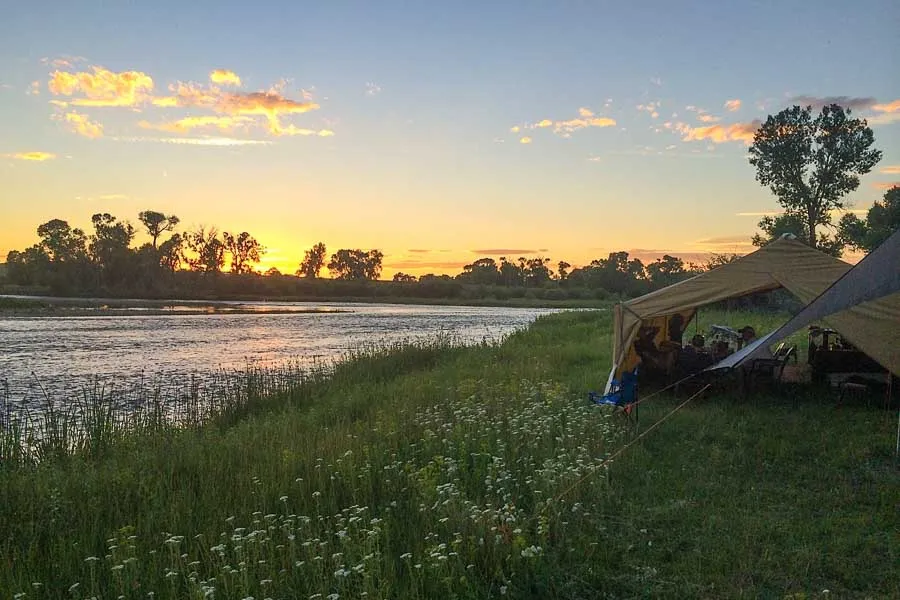

Explore Our Guided Trips

Fly fishing Montana’s blue‑ribbon rivers—River Run Guides offers an unforgettable adventure for anglers of all levels.

Half‑Day & Full‑Day Trips
Join us for an immersive day on the water. Perfect for beginners and seasoned anglers alike, these trips explore pristine river stretches teeming with trout.
- Half‑Day Trip: $200 per person (4 hours, includes gear and instruction)
- Transportation Included: We’ll pick you up and drop you off at your lodge
- Full‑Day Trip: $350 per person (8 hours, includes gear, lunch, and transportation)

Multi‑Day Adventures
Experience the ultimate fishing retreat with lodging, meals, and premium locations. Immerse yourself in the wilderness with guided fly fishing on some of Montana's most exclusive waters.
- 3‑Day, 2‑Night Trip: $1,200 per person (includes all meals, riverside lodging, gear, and guided fishing daily)
- Riverside cabin accommodations with private decks
- All meals prepared by our camp chef, featuring local ingredients
- Complimentary professional river photography package

Family & Group Packages
Tailored adventures for families or groups—team building, reunions, or first casts for kids. We handle the details so you can focus on the fun.
- Groups of 4–6: $750+/day (gear & lunch included)
- Family (2 adults, 2 kids): $600/day (kid‑friendly instruction)
- Contact us for custom group rates.